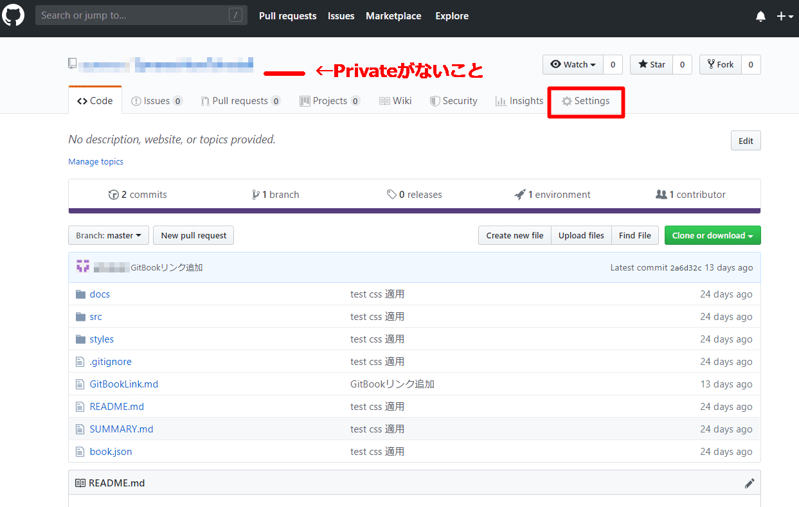
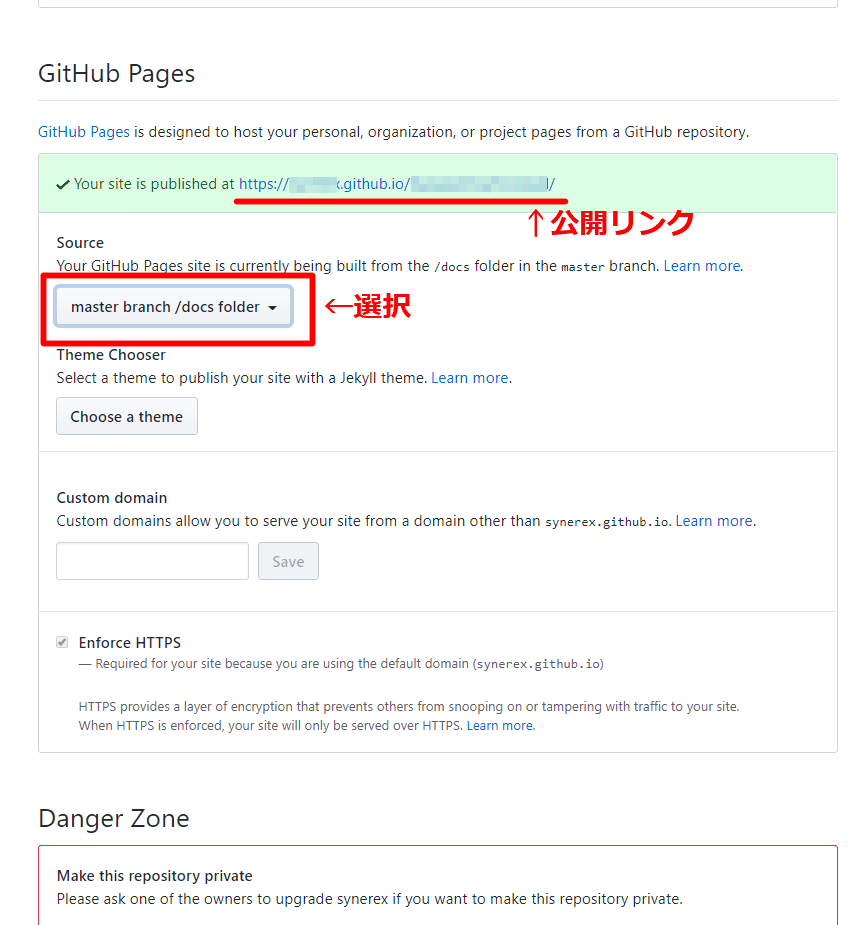

website公開
作成したGitBookコンテンツをwebsiteとして公開するために、github.comの公開リポジトリ※として登録する。
※github有料ユーザの場合、公開リポジトリでなくてもよい場合がある
Git追跡非対象ファイル定義
.gitignore は、Git による追跡対象としないファイルを指定するための設定ファイルである。
必要に応じ.gitignore を設定する。以下はサンプル。
/node_modules
/book.pdf
/book.epub
/book.mobi
GitHubへのコミット
ビルド済みのGitBookプロジェクトを、github.comの公開リポジトリのmasterブランチとしてコミットする。
Gitリポジトリの公開設定
Gitリポジトリの公開設定を行う。
- 公開リポジトリであることを確認する。
Private表示がないこと。Private表示がある場合、設定画面「Danger Zone」項目にて公開リポジトリに変更する。
- リポジトリの「Settings」を選択し、設定画面を表示する。

- 画面を下へスクロールし、「GitHub Pages」項目を表示

- 公開リンクを書き留める（リポジトリ内容に誤りがある場合、正しく表示されないので内容を見直すこと。（例：8.3形式ファイル名でない、必須ファイルがない、etc.））
- 「Source」項目から、「master branch /docs folder」を選択
ブラウザでGitBookを表示
前項にて書き留めておいた公開リンクをブラウザで表示する。